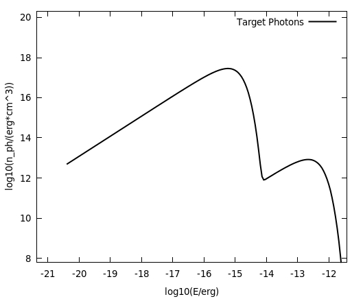
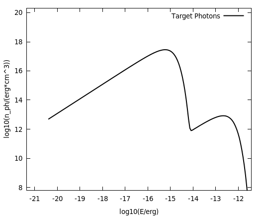

Level 1: Photon Spectrum, Input Particle Distribution¶
In the following it will be shown how to calculate a broadband photon
spectrum from a particle distribution that is provided externally in
a text file. This example is diplayed C++ syntax. The following examples
will be presented in python style.
The full example is provided in docu/tutorial/SimpleModel.C.
In the Makefile the necessary gcc commands can be found to compile the program.
If you followed the installation instructions, it should be already compiled.
Run the program like:
$ bin/TutorialLevel1 docu/tutorial/TutorialLevel1Params.dat
Now, let’s discuss the individual commands:
- create objects
Utils *fUtils = new Utils();
Radiation *fRad = new Radiation();
- the parameter file is read in with the
ReadParameterFilemethod in the Utils class and looks as follows
Distance 1.e3
AmbientDensity .3
BField 1.e-5
TRAD 1000.
edensRAD 1.
inputspectrumElectrons examples/electrons.dat
inputspectrumProtons examples/protons.dat
outfile examples/SimpleModelOutput
- read in the files holding the particle spectra
vector< vector <double> > electronvector,protonvector;
fUtils->ReadIn(electronfile,electronvector);
fUtils->ReadIn(protonfile,protonvector);
- set parameters
fRad->SetDistance(d);
fRad->SetBField(b);
fRad->SetAmbientDensity(n);
fRad->AddThermalTargetPhotons(2.7,0.25*TeV_to_erg*1.e-12);//CMB is hard-coded!
fRad->AddThermalTargetPhotons(t,e);//additional field, parameters from config
fRad->SetElectrons(electronvector);
fRad->SetProtons(protonvector);
Hint
Target photons can be specified in four different ways:
AddThermalTargetPhotons: Add grey-body distribution of photonsAddArbitraryTargetPhotons: Add an arbitrary distribution of photons. A 2D-Vector has to be supplied (units: [erg] vs [erg^-1 cm^-3]. This method is useful e.g. to let different zones interact with each other.ImportTargetPhotonsFromFile: Import the photons from a file. The file has to consist of two column, energy and differential photon density. Units are [eV] vs [eV^-1cm^-3]SetSSCTargetPhotons: Add source’s own emission spectrum as a target field. Works only if a source extension is available.
Warning
At the moment, the ImportTargetPhotonsFromFile is not available in the
python package!
- calculate the spectrum
fRad->CalculateDifferentialPhotonSpectrum();
- get the spectra
fUtils->WriteOut(fRad->GetProtonVector(),outtag+"_ProtonSpectrum.dat");
fUtils->WriteOut(fRad->GetElectronVector(),outtag+"_ElectronSpectrum.dat");
fUtils->WriteOut(fRad->GetTotalSED(),outtag+"_TotalSpectrum.dat");
fUtils->WriteOut(fRad->GetICSED(),outtag+"_ICSpectrum.dat");
fUtils->WriteOut(fRad->GetBremsstrahlungSED(),outtag+"_BremsSpectrum.dat");
fUtils->WriteOut(fRad->GetSynchrotronSED(),outtag+"_SynchSpectrum.dat");
fUtils->WriteOut(fRad->GetPPSED(),outtag+"_PPSpectrum.dat");
fUtils->WriteOut(fRad->GetTotalTargetPhotonVector(),outtag+"_TargetPhotons.dat");
The resulting spectra look as follows (plotted with gnuplot)
 

{kind=link}